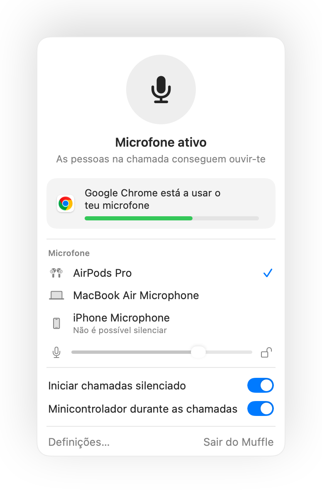
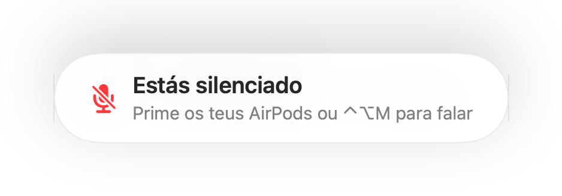
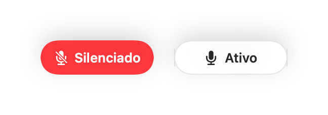
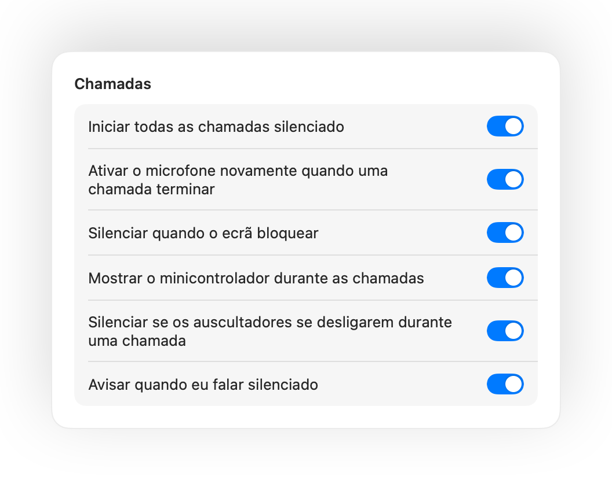

Silencia o microfone do teu Mac em qualquer lugar.
Prime os teus AirPods ou usa um atalho de teclado. O Muffle desliga o microfone diretamente, para que o Google Meet, Zoom, Teams, Slack e todas as outras apps só ouçam silêncio.
Grátis durante 3 dias. Depois, pagamento único sem subscrição. Para o macOS 14 Sonoma e posterior.

Funciona com qualquer app que utilize o teu microfone
- Google Meet
- Zoom
- Microsoft Teams
- Slack
- Discord
- FaceTime
- Webex
- Skype
- SoWork
- Gather
- Chrome
- Safari
- Arc
- Edge
- Firefox
O Muffle silencia o microfone ao nível do hardware, por isso não importa que app, navegador ou separador estejas a utilizar.
Tudo o que o teu Mac deve fazer numa chamada
Prime os teus AirPods para silenciar
Durante qualquer chamada, prime a haste uma vez para silenciar e outra para ativar. Funciona até no Chrome, onde o Google Meet e outras videochamadas ignoram a pressão dos AirPods.
Um atalho para qualquer app
Controlo-Opção-M silencia o teu microfone em qualquer lugar, mesmo com a reunião num separador em segundo plano. Mantém premido para falar e larga para silenciar novamente.
Um aviso quando falas silenciado
Se começares a falar enquanto estás silenciado, o Muffle avisa-te antes de começares a explicar toda a tua ideia a ninguém.
Chamadas em piloto automático
Inicia todas as chamadas silenciado, ativa o microfone novamente quando uma chamada terminar e silencia sempre que bloqueares o ecrã do teu Mac.
Sabe sempre se o microfone está ativo
Um pequeno botão flutuante mostra o estado do teu microfone durante as chamadas. Clica para silenciar ou ativar.
O nível do microfone não se altera
O Chrome, o Zoom e o Teams alteram o nível do microfone sozinhos. Bloqueia o nível e o Muffle repõe o valor correto.
Segurança quando a bateria dos AirPods acaba
Se os teus auscultadores se desligarem a meio de uma chamada, o Muffle silencia antes de a chamada mudar para o microfone do Mac e transmitir o som de toda a sala.
Atalhos e Central de controlo
Silencia através da app Atalhos, da Siri, de uma Stream Deck, do Raycast ou de um botão na Central de controlo.



Configuração num minuto
- Instala o Muffle a partir da Mac App Store e permite o acesso ao microfone.
- Entra numa chamada ou reunião em qualquer app, como habitual.
- Prime os teus AirPods, prime Controlo-Opção-M ou clica no ícone da barra de menus para silenciar.
Privacidade por definição
O Muffle nunca grava, armazena nem envia áudio. Apenas liga e desliga o teu microfone e mede o volume da fala. Sem contas, sem análises e sem monitorização.
Perguntas frequentes
O Muffle funciona com o Google Meet no Chrome?
Sim. O Chrome não transmite a pressão de silenciar dos AirPods para as chamadas web, pelo que o Muffle interceta o comando e desliga o microfone diretamente. O mesmo se aplica a qualquer chamada num separador do navegador.
As outras pessoas vão ver que estou silenciado?
A tua app de chamada pode continuar a mostrar o microfone ativo, porque o Muffle desliga o microfone físico e não o botão da app. As pessoas ouvem apenas silêncio de qualquer forma. O ícone do Muffle na barra de menus fica vermelho enquanto estiveres silenciado.
Que modelos de AirPods são compatíveis?
AirPods Pro, AirPods 3 e posteriores, e AirPods Max, além de modelos Beats compatíveis com controlos de chamada. O atalho de teclado e a barra de menus funcionam com qualquer microfone.
Funciona com o Zoom, Teams, Slack e Discord?
Sim. O Muffle funciona com todas as apps no teu Mac que utilizem o microfone, tanto aplicações de computador como chamadas no navegador.
Existe alguma subscrição?
Não. Experimenta todas as funcionalidades gratuitamente durante 3 dias e depois desbloqueia o Muffle com uma compra única.
Por que motivo o Muffle precisa de acesso ao microfone?
O macOS só transmite a pressão dos AirPods a apps que estejam a utilizar o microfone, pelo que o Muffle mantém uma ligação silenciosa aberta durante as chamadas. Não é gravado nada.
O que acontece se fechar o Muffle enquanto estiver silenciado?
O Muffle ativa o teu microfone novamente quando fecha, para que nunca fiques sem som.
Que versões do macOS são compatíveis?
macOS 14 Sonoma e posterior. O botão na Central de controlo exige o macOS 26 ou posterior.
Guias
- Como silenciar o Google Meet com os AirPods no MacSilencia o Google Meet no Chrome com os AirPods no Mac. Controla o microfone com um atalho, os auscultadores ou na barra de menus em qualquer chamada.
- Como silenciar o Zoom com AirPods ou um atalho no MacSilencia o Zoom no Mac premindo os AirPods ou com um atalho global, mesmo em segundo plano. Funciona na app Zoom e no navegador durante reuniões.
- Como silenciar o Microsoft Teams com AirPods no MacSilencia o Microsoft Teams no Mac com os AirPods, um atalho global ou a barra de menus. Funciona na app Teams e na web, ideal para teletrabalho.
- Como silenciar uma reunião do Slack a partir de qualquer app no MacSilencia reuniões do Slack no Mac a partir de qualquer app com um atalho global ou os teus AirPods. Controla o microfone sem procurar a janela.
- Premir para falar e atalho global para silenciar no Discord no MacUsa um atalho global de premir para falar e silenciar no Discord no Mac ou silencia com os AirPods. Funciona na app Discord e no navegador.
- Como silenciar o Webex a partir de qualquer app no MacSilencia reuniões do Webex no Mac com um atalho global ou com os AirPods, mesmo quando o Webex não é a janela ativa.
Respostas práticas e rápidas para silenciares o microfone no Mac, em qualquer app.
Chega de procurar o botão para silenciar.
O Muffle é gratuito para experimentar durante 3 dias.
Brevemente na Mac App Store